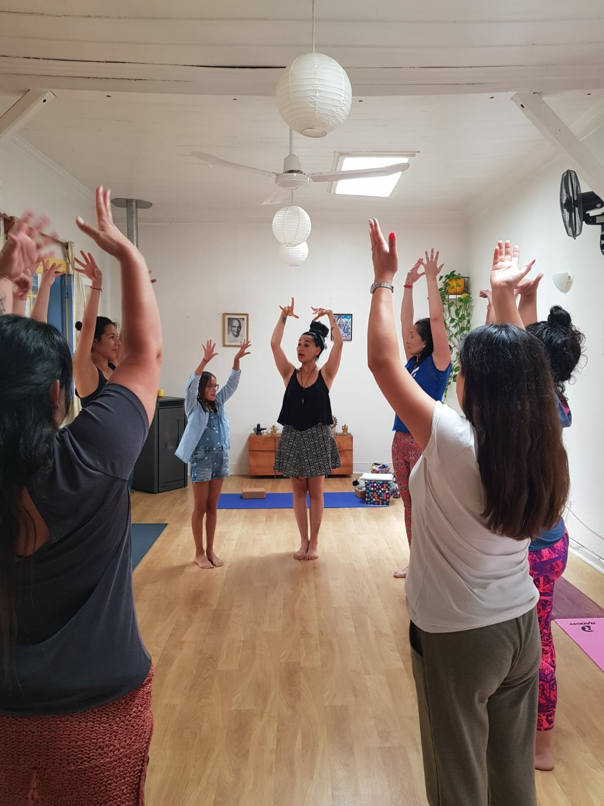

El Taller de Yoga para Niños en Viña del Mar fue un evento maravilloso que duró dos días.
Las participantes eran muy agradecidas por la enseñanza teórica y práctica que recibieron.
Este taller estaba destinado a mujeres interesadas en aprender sobre yoga infantil y disfrutaron mucho del ambiente relajado y tranquilo.
Durante los dos días, las participantes aprendieron técnicas de yoga y cómo aplicarlas a sus clases con los niños.
La práctica fue una gran parte del taller y las mujeres disfrutaron mucho de la oportunidad de poner en práctica lo que habían aprendido.
Al final del taller, todas las participantes se sentían más seguras y preparadas para enseñar yoga a los niños.
Fue una experiencia maravillosa que dejó un impacto positivo en las vidas de todas las participantes.
Si te gustó el Taller de Yoga para Niños en Viña del Mar, no te pierdas la oportunidad de participar en próximos talleres. Estos eventos son una excelente manera de aprender y mejorar tus habilidades en yoga infantil, y de conocer a otros entusiastas del yoga.
¡No te quedes sin participar en esta emocionante experiencia! Mantente atento a las fechas y lugares de los próximos talleres y ¡anímate a unirte a la próxima sesión!